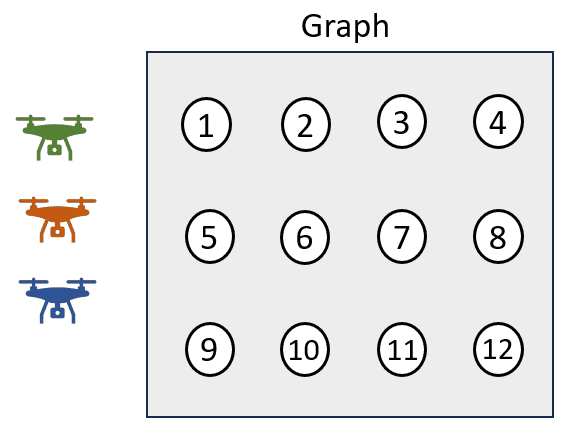
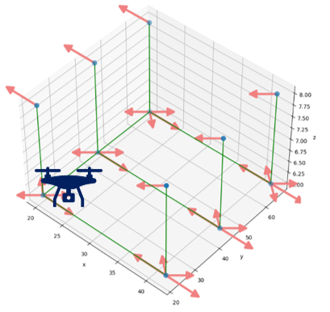
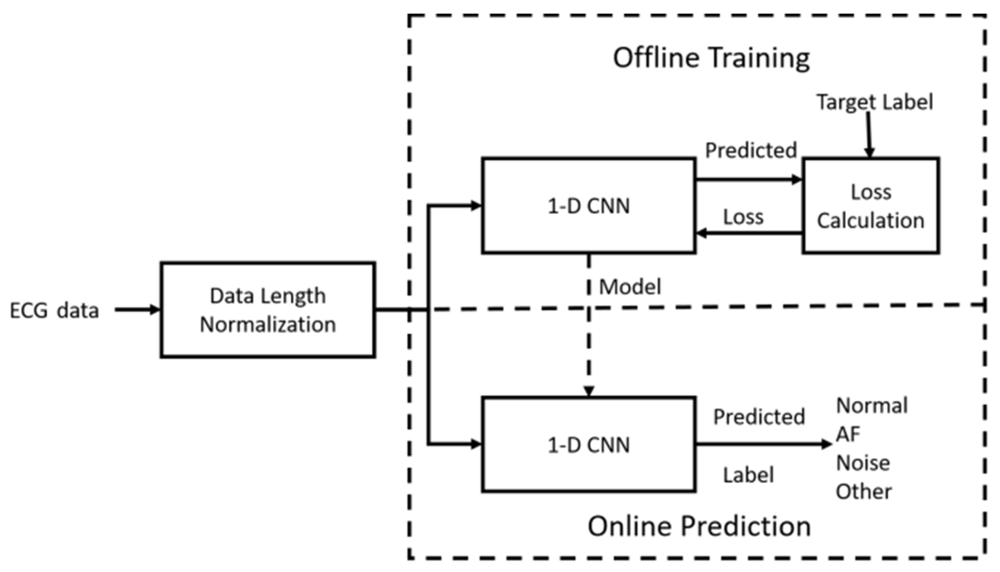

|
Yanshuo Lee email: yanshuolee102_at_gmail_dot_com I am a master's student in Department of Mathematics at National Central University (NCU), under the supervision of Kuo-Shih Tseng. My research interests include multi-robot systems, reinforcement learning, and Combinatorial optimization. I received my B.Sc. in Computer and Communication Engineering from Ming Chuan University (MCU). During my time at MCU, I was advised by Chaur-Heh Hsieh, working on research in deep learning. |

|
News
|
Publications |
|

|
Multi-robot Search in a 3D Environment with Intersection System Constraints
Yan-Shuo Li, Kuo-Shih Tseng IEEE International Conference on Robotics and Automation (ICRA) 2024 project page / video Efficient task allocation is a challenge for multi-robot search. The multi-robot search problem is reformulated as submodular maximization subject to intersection system constraints. The objective function is submodular and consists of a coverage function to cover environments and a balancing function to efficiently dispatch robots. The intersection system is composed of routing and clustering constraints. The experiment results show that the proposed approach outperforms state-of-the-art methods in multi-robot search. |
|

|
Computation-Aware Multi-object Search in 3D Space using Submodular Tree
Yan-Shuo Li, Kuo-Shih Tseng IEEE International Conference on Robotics and Automation (ICRA) 2024 project page / video Searching for targets in 3D environments can be formulated as submodular maximization problems with routing constraints. However, it involves solving two NP-hard problems: the maximal coverage problem and the traveling salesman problem. Since the time constraint is critical for search problems, this research proposes a Computation-Aware Search for Multiple Objects (CASMO) algorithm to further consider the computational time in the cost constraints. Due to the submdularity, the greedy algorithm achieves 1/2(1-1/e)OPT, where OPT is the approximate optimum. The experiment results show that the proposed algorithm outperforms state-of-the-art approaches in multi-object search. |
|

|
Detection of Atrial Fibrillation Using 1D Convolutional Neural Network
Chaur-Heh Hsieh, Yan-Shuo Li, Bor-Jiunn Hwang, Ching-Hua Hsiao Sensors 2020 This paper proposes an AF detection method based on an end-to-end 1D convolutional neural network (CNN) architecture to raise the detection accuracy and reduce network complexity. By investigating the impact of major components of a convolutional block on detection accuracy and using grid search to obtain optimal hyperparameters of the CNN, we develop a simple, yet effective 1D CNN. Since the dataset provided by PhysioNet Challenge 2017 contains ECG recordings with different lengths, we also propose a length normalization algorithm to generate equal-length records to meet the requirement of CNN. Experimental results and analysis indicate that our method of 1D CNN achieves an average F1 score of 78.2%, which has better detection accuracy with lower network complexity, as compared with the existing deep learning-based methods. |